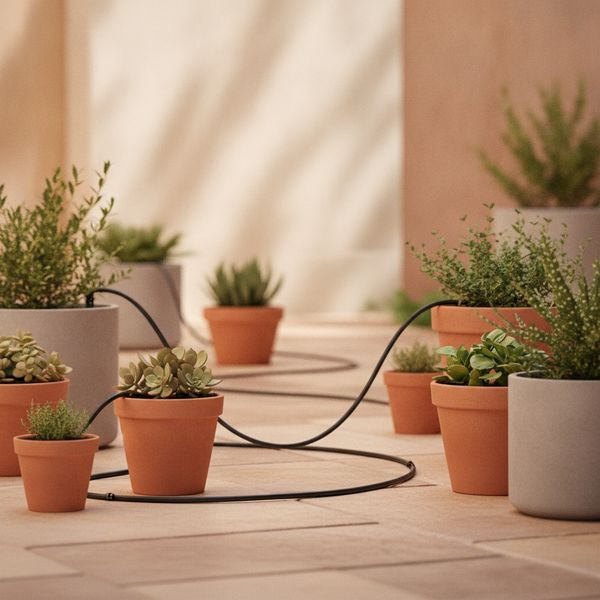
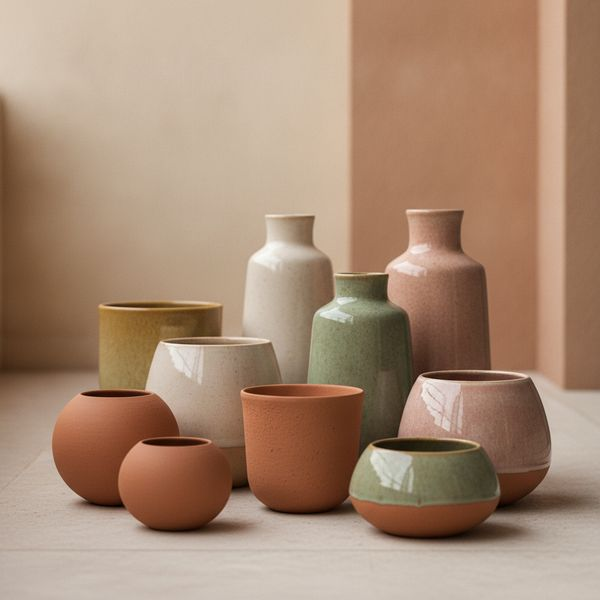
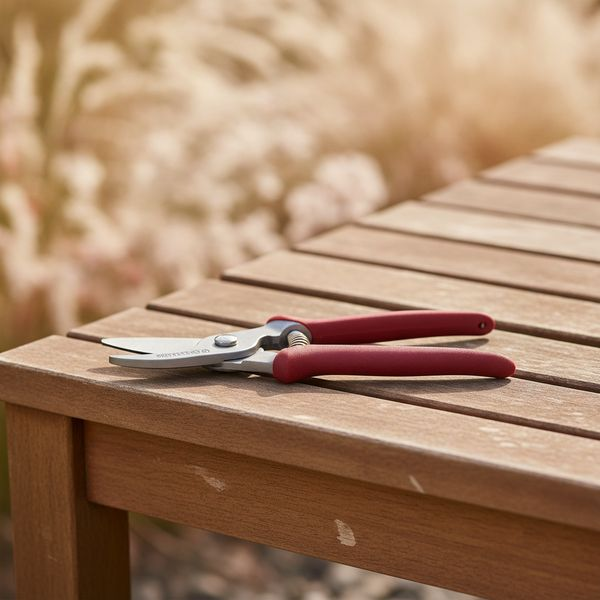
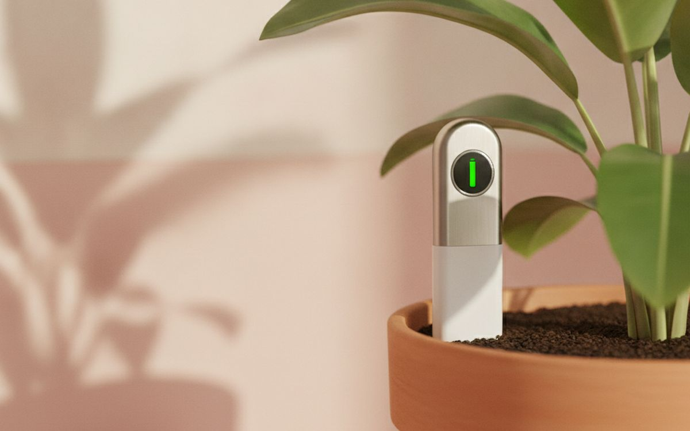
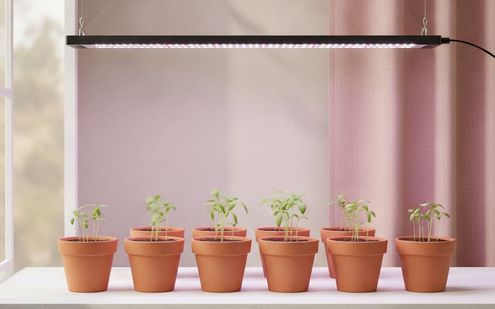
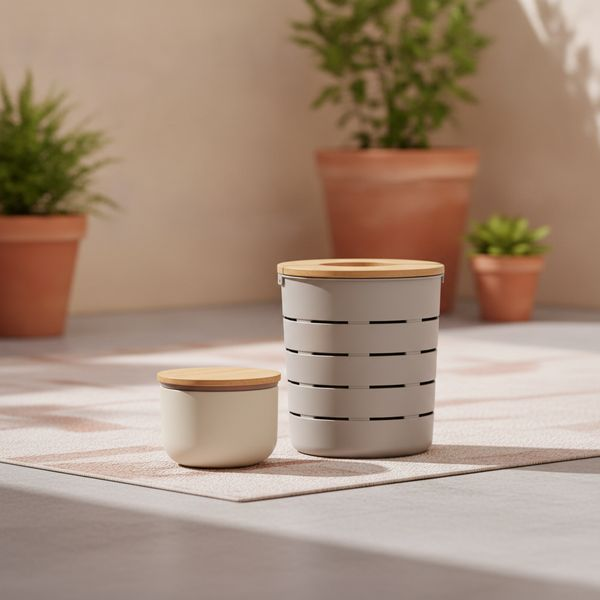
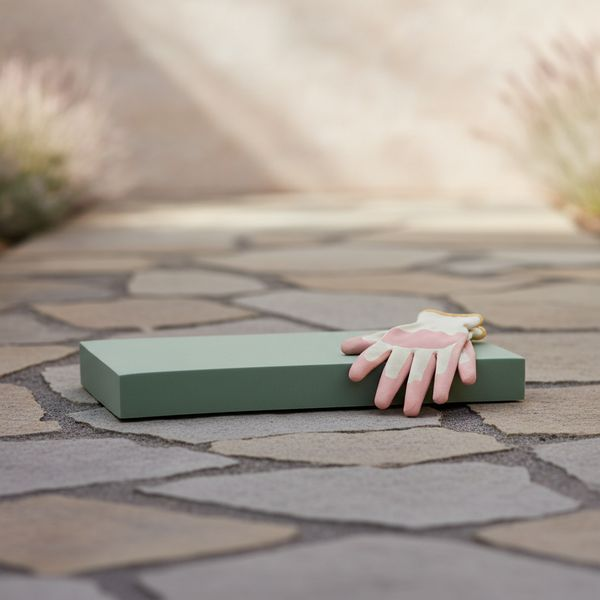
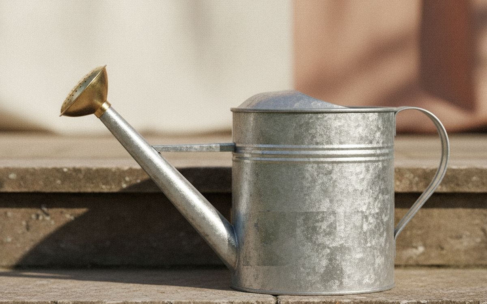
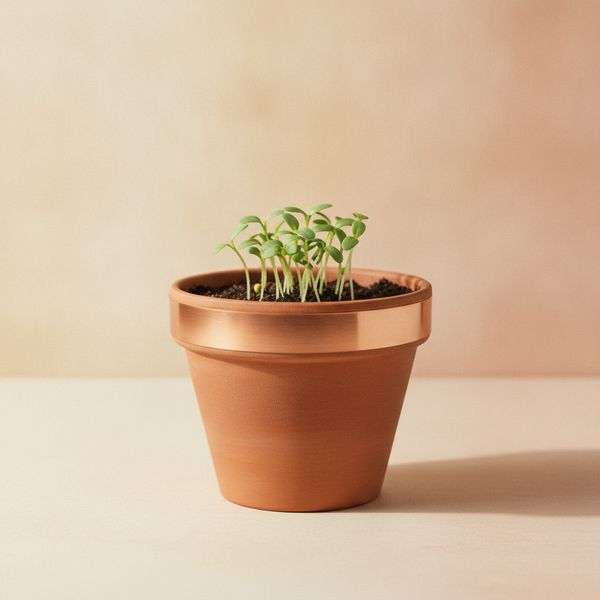
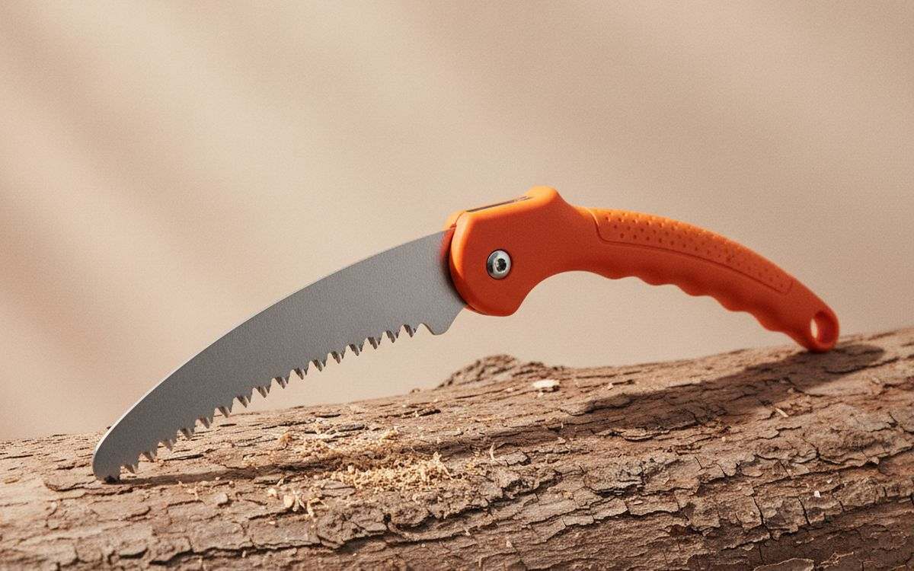

Zehn Dinge, die auf dem Balkon genauso gut funktionieren wie im Garten, geordnet danach, wie stark sie das Wachstum tatsächlich beeinflussen.
Fürs Gärtnern gibt es einen riesigen Markt an Zubehör, aber nur eine sehr kurze Liste von Dingen, die über das Überleben von Pflanzen entscheiden. Wasser, Licht, Drainage und Erde erledigen fast die ganze Arbeit. Alles andere ist nur Bequemlichkeit.
Diese Liste ist daher nach der Auswirkung auf das Ergebnis geordnet. Ganz oben stehen die Dinge, die verhindern, dass Pflanzen sterben, während Sie weg oder abgelenkt sind – was mit Abstand die häufigste Fehlerquelle ist. Werkzeuge kommen erst danach.
Fast alles hier funktioniert auf einem Balkon genauso gut wie in einem Garten, denn Töpfe haben die gleichen Bedürfnisse wie Beete – sie trocknen nur schneller aus. Wenn etwas wirklich nur für den Garten geeignet ist, erwähnen wir das.
Die Preise sind ungefähre Angaben zum Zeitpunkt der Erstellung dieses Artikels. Gartengeräte sind am Ende der Saison stark reduziert, was der vernünftigste Zeitpunkt ist, um alles zu kaufen, was nicht dringend ist.
Hinweis. Die Links auf dieser Seite sind Affiliate-Links. Wenn Sie darüber kaufen, erhalten wir unter Umständen eine Provision ohne Mehrkosten für Sie. Das beeinflusst weder die Auswahl noch die Reihenfolge dieser Liste.
Wie wir ausgewählt haben
Wir bewerten danach, ob Pflanzen überleben und Ertrag bringen, nicht danach, wie gut ein Werkzeug in der Hand liegt. Wir stützen uns auf gärtnerische Fachliteratur, veröffentlichte Tests und Langzeitberichte von Nutzern. Wir haben nicht jedes hier vorgestellte Produkt persönlich verwendet. Wo die Lösung eher eine Technik als ein Kauf ist – und das ist im Garten oft der Fall – weisen wir darauf hin.
Auf einen Blick
Die Preise sind Näherungswerte zum Zeitpunkt der Erstellung und ändern sich häufig.
Die Empfehlungen

1
Die Lösung für die häufigste TodesursacheEin Tropfbewässerungsset mit Zeitschaltuhr
$45–120
Unregelmäßiges Gießen tötet mehr Kübelpflanzen als Schädlinge und Krankheiten zusammen. Das Muster ist immer dasselbe: drei Wochen lang geht alles gut, dann kommt eine Hitzewelle oder ein Urlaub und alles ist hinüber. Eine Zeitschaltuhr mit Tropfschlauch nimmt den Menschen komplett aus der Gleichung, und genau darum geht es. Sie bewässert auch besser als eine Gießkanne: Die langsame Abgabe an der Wurzel erreicht den gesamten Wurzelballen, anstatt an der Topfinnenseite hinab- und unten wieder hinauszulaufen, was bei einem schnellen Guss tatsächlich passiert. Die Sets sind modular und benötigen keine Sanitärinstallation. Überprüfen Sie die Batterien der Zeitschaltuhr jedes Frühjahr.
Warum es hier steht
- Beseitigt die Haupttodesursache bei Kübelpflanzen
- Bewässert den gesamten Wurzelballen richtig, nicht nur die Oberfläche
- Keine Sanitärinstallation nötig, vollständig modular
Gut zu wissen
- Die Batterien der Zeitschaltuhr versagen unbemerkt – jedes Frühjahr prüfen
- Die Tropfer verstopfen und müssen gelegentlich gereinigt werden

2
Die unspektakulären GrundlagenTöpfe mit echter Drainage und die richtige Erde
$30–80
Zwei Fehler sind für einen Großteil der abgestorbenen Kübelpflanzen verantwortlich, und beide lassen sich für fast kein Geld vermeiden. Der erste ist ein Ziertopf ohne Abflussloch, der die Wurzeln unbemerkt ertränkt – bohren Sie entweder ein Loch hinein oder verwenden Sie ihn als Übertopf mit einem Plastiktopf darin. Der zweite ist, Töpfe mit Gartenerde zu füllen, die in einem Behälter zu einem dichten, luftlosen Block verhärtet und sich nicht so verhält wie im Boden. Verwenden Sie richtige Blumenerde. Terrakotta atmet und trocknet schneller, was Kräutern und mediterranen Pflanzen zugutekommt, aber für durstige Pflanzen von Nachteil ist.
Warum es hier steht
- Behebt zwei der häufigsten Fehlerursachen
- Es kostet fast nichts, es richtig zu machen
- Terrakotta eignet sich für Kräuter und trockenheitsliebende Pflanzen
Gut zu wissen
- Ziertöpfe haben oft gar keine Drainage
- Gartenerde verdichtet sich in Töpfen stark

3
Scharf kaufen, scharf haltenEine Bypass-Gartenschere
$30–70
Bypass-Scheren schneiden wie eine Schere, bei der zwei Klingen aneinander vorbeigleiten. Sie hinterlassen einen sauberen Schnitt, der heilt. Amboss-Scheren quetschen den Stiel gegen eine flache Platte, was lebendes Holz beschädigt und Krankheiten begünstigt – verwenden Sie diese nur für totes Material. Ein sauberer Schnitt ist wichtiger, als die meisten Anfänger denken. Kaufen Sie ein Modell, dessen Klingen ausgetauscht und geschärft werden können, anstatt eines versiegelten. Reinigen Sie die Schere zwischen den Schnitten, wenn eine Pflanze krank ist. Eine stumpfe Schere versagt nicht offensichtlich; sie zerreißt nur alles und Sie geben der Pflanze die Schuld.
Warum es hier steht
- Saubere Schnitte heilen; gequetschte fördern Krankheiten
- Dank austauschbarer Klingen hält eine Schere jahrelang
- Bequeme Modelle reduzieren die Ermüdung der Hand
Gut zu wissen
- Amboss-Scheren beschädigen lebende Stängel
- Stumpfe Klingen versagen unbemerkt – schärfen Sie sie

4
Günstige Antwort auf eine häufige FrageEin Feuchtigkeitsmesser, falls Sie zu viel gießen
$12–30
Überwässerung tötet mehr Zimmerpflanzen als Trockenheit, denn nasse Erde erstickt die Wurzeln. Die Symptome – hängende, gelbe Blätter – sehen aber genauso aus wie Durst, also gießen die Leute mehr und beschleunigen das Problem. Eine billige Sonde misst die Feuchtigkeit in Wurzeltiefe statt an der Oberfläche, also dort, wo man nichts sieht und wo es darauf ankommt. Es ist mehr ein Lernwerkzeug als ein dauerhaftes Gerät: Nutzen Sie es eine Saison lang, um ein Gefühl für das richtige Gewicht Ihrer Töpfe zu bekommen, und Sie werden es nicht mehr brauchen. Den Finger zwei Zoll tief in die Erde zu stecken, erfüllt den gleichen Zweck kostenlos.
Warum es hier steht
- Misst in Wurzeltiefe, wo es darauf ankommt
- Sehr günstig und bei einfachen Modellen ohne Batterien
- Unterbricht den Teufelskreis des Überwässerns schnell
Gut zu wissen
- Ein Finger erledigt den gleichen Job kostenlos
- Billige Messgeräte werden mit der Zeit ungenau und korrodieren

5
Nur wenn Licht der limitierende Faktor istEine Pflanzenlampe für eine dunkle Wohnung
$40–120
Wenn Ihre Pflanzen „geil“ wachsen – also lang, blass und sich zum Fenster strecken – ist Licht der begrenzende Faktor, und nichts anderes, was Sie kaufen, wird helfen. Eine Vollspektrum-LED behebt das direkt und macht auch die Anzucht von Samen im Winter wirklich möglich. Prüfen Sie die tatsächliche Leistung und nicht die Wattzahl, da die Marketingangaben hier ungewöhnlich übertrieben sind. Schließen Sie die Lampe an eine Zeitschaltuhr für zwölf bis sechzehn Stunden an; mehr ist nicht besser, und Pflanzen brauchen eine Dunkelphase. Wenn Ihre Pflanzen gesund und kompakt sind, haben Sie kein Lichtproblem und sollten Ihr Geld besser für etwas anderes ausgeben.
Warum es hier steht
- Behebt Geilwuchs in dunklen Räumen direkt
- Macht die Anzucht von Samen im Winter möglich
- Moderne LEDs sind günstig im Betrieb
Gut zu wissen
- Leistungsangaben sind routinemäßig übertrieben
- Sinnlos, wenn Licht nicht Ihr tatsächliches Problem ist

6
Funktioniert auch auf dem BalkonEin Komposteimer für die Küche und eine kleine Komposttonne oder Wurmkiste
$40–120
Kompost ist der billigste Bodenverbesserer, den es gibt, und Sie bezahlen im Moment dafür, dass das Rohmaterial dafür abtransportiert wird. Ein Küchenkomposter mit Kohlefilter steht geruchlos auf der Arbeitsplatte, und eine kleine Tonne oder eine Wurmkiste bewältigt das Volumen eines Haushalts ohne Garten. Besonders Wurmkisten funktionieren auf einem Balkon und erzeugen als Nebenprodukt einen konzentrierten Flüssigdünger. Halten Sie das Verhältnis zwischen grünen Küchenabfällen und braunem Material wie Pappe ungefähr im Gleichgewicht; fast jede Geruchsbeschwerde lässt sich auf zu viel Grün und zu wenig Luft zurückführen.
Warum es hier steht
- Verwandelt Abfall in den besten Bodenverbesserer, den es gibt
- Wurmkisten funktionieren auf einem Balkon
- Flüssigdünger als kostenloses Nebenprodukt
Gut zu wissen
- Geruch bedeutet, das Grün-Braun-Verhältnis stimmt nicht
- Es dauert Monate bis zum ersten nutzbaren Ergebnis

7
Entscheidet, wie lange Sie durchhaltenKniekissen und richtige Handschuhe
$25–50
Wie lange Sie an einem Nachmittag im Garten arbeiten, hängt meist eher von Ihren Knien und Händen ab als von Ihrer Begeisterung. Deshalb sind diese Dinge mehr wert, als sie aussehen. Ein dickes Schaumstoffkissen kostet sehr wenig und verdoppelt die bequeme Arbeitszeit ungefähr. Bei Handschuhen ist nitrilbeschichtetes Gewebe der nützliche Kompromiss – genug Feingefühl für Setzlinge und genug Schutz vor Dornen, im Gegensatz zu dickem Leder, das sicher, aber für feine Arbeiten unbrauchbar ist. Kaufen Sie zwei Paar, denn eines wird immer nass sein. Tragen Sie bei Erdarbeiten generell Handschuhe; im Kompost gibt es Bakterien und Pilze, die man besser nicht mit bloßen Händen anfasst.
Warum es hier steht
- Verdoppelt die bequeme Arbeitszeit ungefähr
- Nitrilbeschichtung bietet eine gute Balance aus Griffigkeit und Schutz
- Günstig
Gut zu wissen
- Man braucht zwei Paar Handschuhe im Wechsel
- Dickes Leder ist für feine Arbeiten unbrauchbar

8
Auf die Brause kommt es anEine Gießkanne mit feiner Brause
$25–60
Jeder Behälter kann Wasser transportieren. Was Sie aber eigentlich kaufen, ist die Brause – der gelochte Aufsatz, der einen Strahl in Regen verwandelt. Ohne sie spült man Setzlinge aus der Erde, und beim Gießen von Töpfen gräbt sich ein Kanal, durch den das Wasser an einer Seite direkt nach unten und aus dem Abflussloch läuft, während der größte Teil des Wurzelballens trocken bleibt. Eine feine Brause gibt das Wasser so langsam ab, dass die Erde es aufnehmen kann. Prüfen Sie die Balance der vollen Kanne, denn eine schlecht ausbalancierte Kanne ist anstrengend und verleitet dazu, weniger zu gießen als beabsichtigt.
Warum es hier steht
- Eine feine Brause sorgt dafür, dass das Gießen wirklich funktioniert
- Unerlässlich für Setzlinge, die ein harter Strahl zerstört
- Einfach, nichts kann kaputtgehen
Gut zu wissen
- Brausen gehen leicht verloren – halten Sie eine als Ersatz bereit
- Schlecht ausbalancierte Kannen sind voll sehr anstrengend

9
Prüfen Sie die lokalen VorschriftenSchneckenbekämpfung ohne blaues Korn
$15–40
Schnecken können eine Reihe Setzlinge in einer Nacht vernichten. Das traditionelle Schneckenkorn mit Metaldehyd ist inzwischen in einigen Ländern wegen der Gefahr für Wildtiere und Haustiere verboten oder eingeschränkt – prüfen Sie vor dem Kauf, was bei Ihnen erlaubt ist. Die Alternativen, die einigermaßen funktionieren, sind Kupferband um Topfränder, Schafwollpellets und Produkte auf Eisen(III)-phosphat-Basis, die vielerorts für den ökologischen Landbau zugelassen sind. Bierfallen funktionieren, müssen aber öfter geleert werden, als man denkt. Keine Methode ist perfekt; zwei zu kombinieren ist effektiver, als eine zu perfektionieren.
Warum es hier steht
- Schützt Setzlinge vor dem schnellsten Totalverlust
- Eisen(III)-phosphat ist vielerorts für den Öko-Anbau zugelassen
- Kupferband ist Jahr für Jahr wiederverwendbar
Gut zu wissen
- Metaldehyd ist in vielen Ländern verboten oder eingeschränkt
- Keine einzelne Methode funktioniert hundertprozentig

10
Nur für den Garten und sicherer als eine AstschereEine klappbare Astsäge
$30–60
Dies ist der einzige Artikel hier, der wirklich nur für den Garten ist. Alles, was dicker als ein Daumen ist, überfordert eine Gartenschere. Eine Astschere hindurchzuzwingen, führt zu einer zerfransten Wunde und oft zu einem kaputten Werkzeug. Eine Klappsäge mit einem Sägeblatt auf Zug schneidet schnell, passt zusammengeklappt in die Tasche und kostet weniger als die Astscheren, die die Leute stattdessen kaufen. Sägezähne im japanischen Stil, die auf Zug schneiden, sind merklich effizienter als solche auf Stoß. Klappen Sie die Säge jedes Mal ein, wenn Sie sie ablegen – eine offene Säge im Gras ist eine der vorhersehbarsten Verletzungsgefahren im Garten.
Warum es hier steht
- Schafft Äste, die für eine Gartenschere zu dick sind
- Sägeblätter auf Zug sind deutlich effizienter
- Lässt sich auf Taschenformat zusammenklappen
Gut zu wissen
- Wirklich nur für den Garten, nicht für den Balkon
- Eine offen liegengelassene Klinge ist eine echte Gefahr
Häufige Fragen
Woran sterben Kübelpflanzen am häufigsten?
Unregelmäßiges Gießen, dann ein fehlendes Abflussloch und die Verwendung von Gartenerde statt Blumenerde. Diese drei Gründe machen den Großteil der Fälle aus, und alle sind leicht und günstig zu beheben.
Kann man auf einem Balkon etwas Sinnvolles anbauen?
Ja – Kräuter, Blattsalate, Chilis, Tomaten und Erdbeeren gedeihen alle gut in Töpfen. Die wirklichen Einschränkungen sind Sonnenstunden und Wind, nicht der Platz. Zählen Sie, wie viele Stunden direkte Sonne der Standort tatsächlich bekommt, bevor Sie Pflanzen auswählen.
Lohnt sich der Kauf eines Feuchtigkeitsmessers?
Für eine Saison, wenn Sie zum Überwässern neigen. Danach haben Sie gelernt, wie sich ein Topf anfühlen und wie schwer er sein sollte. Ein Finger, zwei Zoll tief in die Erde gesteckt, verrät Ihnen dasselbe kostenlos.
Wann ist die beste Zeit, um Gartengeräte zu kaufen?
Am Ende der Saison, wenn die Händler ihre Lager räumen. Werkzeuge, Töpfe und Möbel sind dann stark reduziert, und nichts davon wird schlecht, wenn es über den Winter gelagert wird.
← Alle Ratgeber
Wir haben uns für das Amazon-Partnerprogramm beworben. Wir sind noch kein Amazon-Partner und verdienen derzeit nichts an Amazon-Links. Preise und Verfügbarkeit entsprechen dem Stand der Veröffentlichung und können sich ändern.